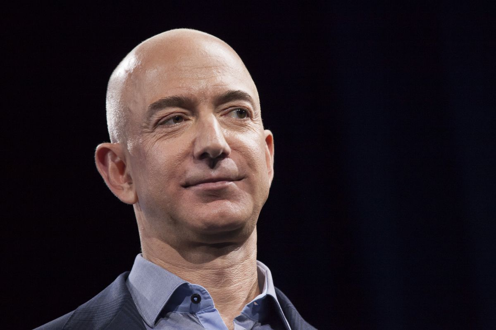
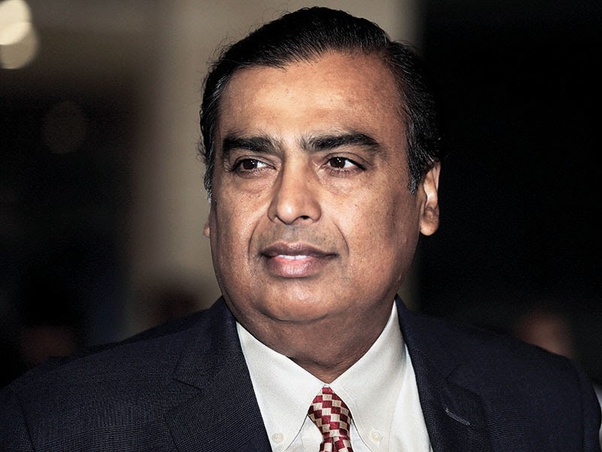

Jeffrey Preston Bezos (/ˈbeɪzoʊs/ BAY-zohss;[3] né Jorgensen; born January 12, 1964)[4] is an American business magnate, media proprietor, and investor. Bezos is the founder and CEO[a] of the multi-national technology company Amazon. With a net worth of more than $190 billion as of June 2021, he is the richest person in the world according to both Forbes and Bloomberg's Billionaires Index. Born in Albuquerque and raised in Houston and later Miami, Bezos graduated from Princeton University in 1986. He holds a degree in electrical engineering and computer science. He worked on Wall Street in a variety of related fields from 1986 to early 1994. Bezos founded Amazon in late 1994, on a cross-country road trip from New York City to Seattle. The company began as an online bookstore.
Elon Reeve Musk FRS (/ˈiːlɒn/ EE-lon; born June 28, 1971) is an entrepreneur and business magnate. He is the founder, CEO, and Chief Engineer at SpaceX; early stage investor,[note 2] CEO, and Product Architect of Tesla, Inc.; founder of The Boring Company; and co-founder of Neuralink and OpenAI. A centibillionaire, Musk is one of the richest people in the world. Musk was born to a Canadian mother and South African father and raised in Pretoria, South Africa. He briefly attended the University of Pretoria before moving to Canada aged 17 to attend Queen's University. He transferred to the University of Pennsylvania two years later, where he received bachelor's degrees in economics and physics. He moved to California in 1995 to attend Stanford University.

Mukesh Dhirubhai Ambani (born 19 April 1957) is an Indian billionaire businessman, and the chairman, managing director, and largest shareholder of Reliance Industries Ltd. (RIL), a Fortune Global 500 company and India's most valuable company by market value.[5] According to Forbes, he is the richest person in Asia with a net worth of US$87.4 billion[6] and the 10th richest person in the world, as of 15 June 2021.
Bill Gates is a technologist, business leader, and philanthropist. He grew up in Seattle, Washington, with an amazing and supportive family who encouraged his interest in computers at an early age. He dropped out of college to start Microsoft with his childhood friend Paul Allen. Today, Bill co-chairs the Bill & Melinda Gates Foundation with Melinda French Gates, where he works to give his wealth back to society. Bill grew up in Seattle with his two sisters. His late father, William H. Gates Sr., was a Seattle attorney and one of the co-chairs of the Bill & Melinda Gates Foundation. His late mother, Mary Gates, was a schoolteacher, University of Washington regent, and chairwoman of United Way International. Bill has three children.